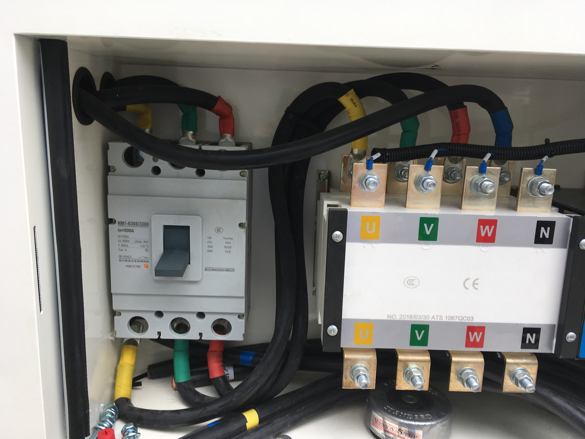
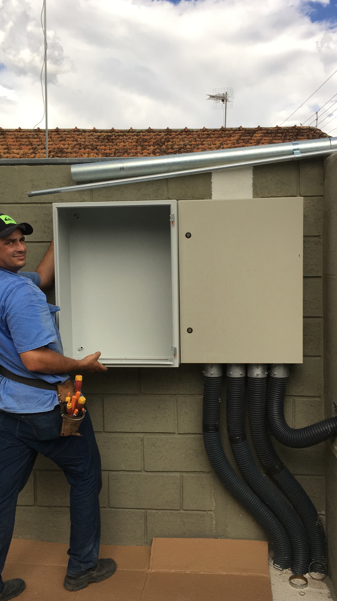
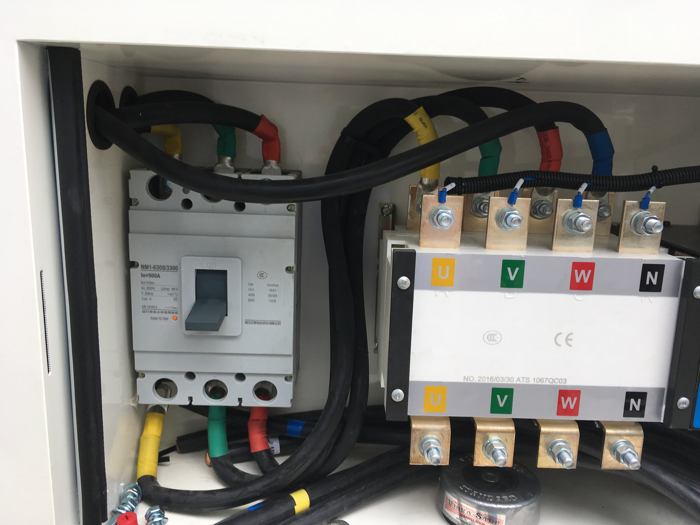
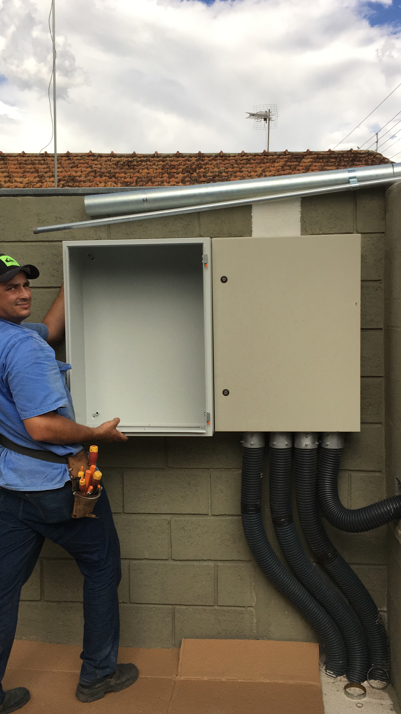
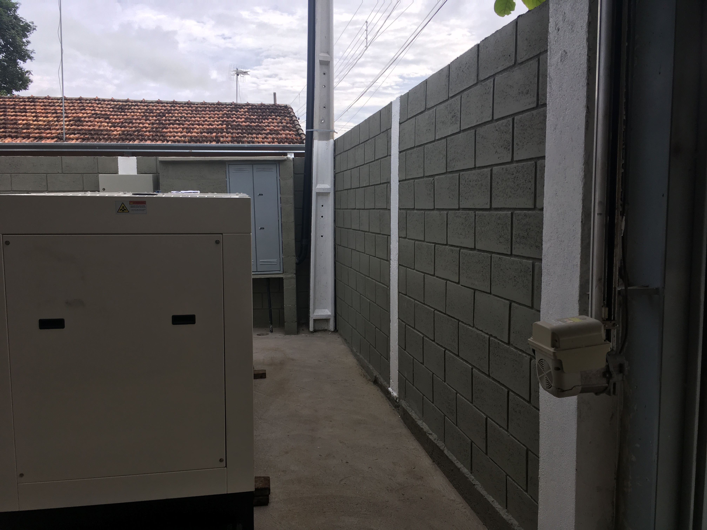
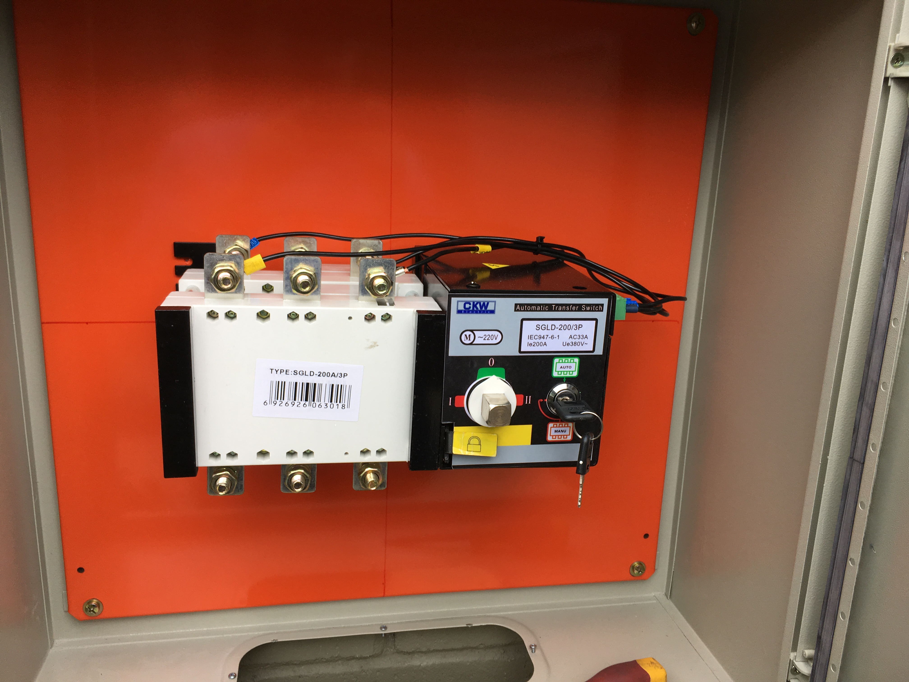
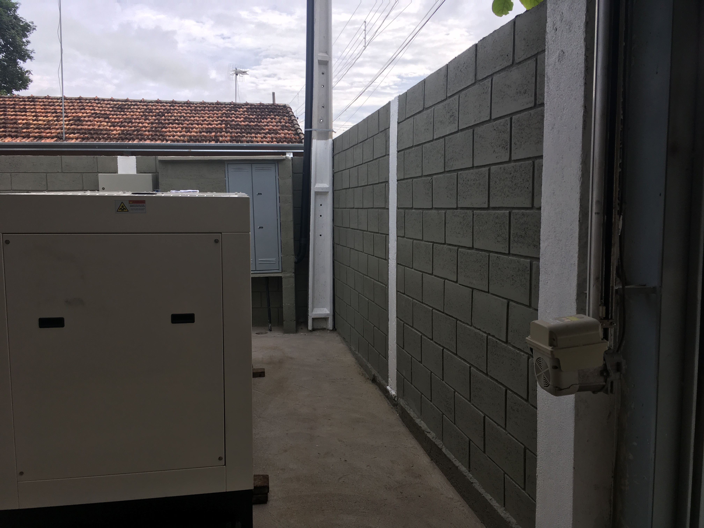
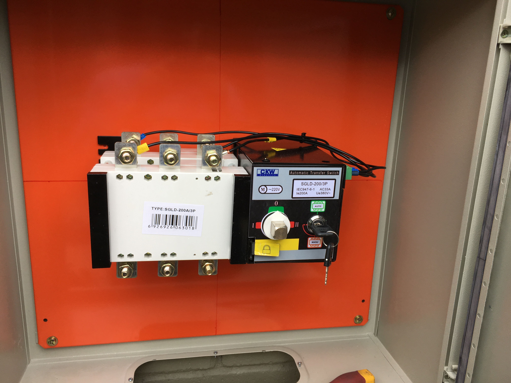

Meu Portfólio
1 - Projeto de Retrofit de Caldeira a Lenha
Atualmente, estou colaborando com a equipe de elétrica em um ambicioso projeto de retrofit em uma caldeira a lenha. Nossa missão é desenvolver e implementar um novo painel de controle e de potência para a caldeira, envolvendo programação em ladder com o CLP CP1E da Omron, utilizando o CX-Programmer, além de criar um supervisório intuitivo com a IHM Ativa M7, através do software Xpanel Designer.
Um dos principais desafios deste projeto é desenvolver o controle PID para a pressão da caldeira e as bombas de água, em um ambiente de alto risco que demanda rigorosas práticas de segurança. Já participei de um projeto de segurança em caldeiras anteriormente, mas este projeto é distinto pelo uso de um supervisório complexo, exigindo que nosso trabalho seja não apenas seguro, mas também harmonioso e intuitivo.
Trabalhar com sinais analógicos apresenta desafios únicos, como lidar com instruções em float, inteiros, decimais e hexadecimais, e exibir esses sinais de maneira clara no supervisório. Conciliar essas demandas com a vida pessoal e os estudos é desafiador, mas é exatamente esse tipo de desafio e oportunidade de criação que me impulsionam.
Este projeto está sendo uma excelente experiência de aprendizado e aprimoramento de minhas habilidades em automação e controle de processos industriais.
2 - Montadora de Divisória
Desenvolvemos um projeto de automação para uma montadora de divisórias que abordou problemas significativos de precisão nas batidas de montagem dos encaixes. Isso anteriormente resultava em desperdícios de material e perda de tempo devido à necessidade frequente de ajustes na posição de atuação da máquina. Nossa solução envolveu a criação de uma programação em ladder, executada no CLP CP1E da Omron, aliada a uma IHM da Delta. Utilizamos sensores foto óptico e um encoder para leitura precisa da posição e velocidade da máquina.
O supervisório desenvolvido permitiu definir com precisão a distância de cada encaixe e monitorar a posição de execução dos mesmos. Ao adaptar automaticamente a posição de atuação à medida que a velocidade da máquina aumenta, conseguimos compensar o tempo de resposta dos atuadores mecânicos, como os pistões pneumáticos, que não podiam ser acelerados. O cálculo das perdas de ação é feito dinamicamente para garantir que, mesmo em velocidades mais altas, os encaixes ocorram precisamente conforme programado.
Utilizamos o CX-Programmer e o DopSoft para a programação, enquanto o diagrama do painel foi elaborado no QElectroTech. Modernizamos o sistema substituindo botões físicos por comandos diretos no supervisório para o controle dos motores de vácuo e das esteiras. Além disso, criamos uma interface de manutenção que permite ajustes, correções de posição, testes de sensores e acionamento manual das válvulas.
Esse projeto desafiador envolveu estudos detalhados e adaptabilidade contínua, realizando vários ajustes pós-instalação, como a medição precisa da circunferência dos eixos da correia. O feedback dos operadores e líderes de setor foi extremamente positivo, evidenciando a facilidade de operação e a precisão alcançada, que resultaram em uma significativa redução de refugos e aumento do tempo produtivo.
3 - Desenvolvimento de Supervisório para Arqueadeira OMS
Identificamos um problema de eficiência operacional decorrente da mudança de layout no setor, que resultou na dificuldade de acesso ao painel de operação da arqueadeira OMS. A necessidade de realizar resets de falhas e operar manualmente o equipamento estava consumindo tempo excessivo, devido à localização inconveniente do painel pós-reorganização.
Para evitar deslocar fisicamente o painel, o que exigiria a reconfiguração de diversos cabos de sensores, botões e potência, desenvolvi um novo supervisório. Utilizando a IHM Ativa M7 e o software XPainel Designer, criei uma interface que atendeu plenamente às necessidades operacionais. A programação foi elaborada em ladder no CLP CP2E da OMS, mas tomei o cuidado de criar uma nova seção na programação, preservando o código original.
A comunicação entre o CLP e a IHM foi estabelecida via protocolo TCP, utilizando apenas um cabo de rede para minimizar a interferência e os ajustes físicos necessários. Este novo sistema não só simplificou o controle do equipamento, como também otimizou o uso do espaço e melhorou significativamente a experiência de operação. A interface desenvolvida mostrou-se intuitiva, reduzindo erros e praticamente eliminando o tempo anteriormente perdido.
Recebemos um feedback extremamente positivo do setor, destacando a facilidade de controle da nova configuração, a instalação ergonômica e os ganhos em eficiência e produtividade.
.jpeg)
.jpeg)
.jpeg)
4 - Projeto de Instalação de Grupo Gerador
Neste projeto, abordei um problema crítico de queda de energia que afetava a qualidade da matéria-prima de um cliente, especialmente produtos congelados. A solução envolveu a instalação de um grupo gerador com capacidade para atender três unidades de energia distintas, utilizando apenas um gerador.
O principal desafio foi a implementação de três chaves de transferência, cada uma responsável por garantir a continuidade do fornecimento elétrico em diferentes unidades. O projeto incluiu desde o planejamento e cálculo da capacidade necessária até a instalação completa da infraestrutura para acomodar os cabos, incluindo os painéis de transferência e barramentos de conexão, todos rigorosamente em conformidade com as normas aplicáveis.
Os diagramas do projeto foram elaborados no AutoCAD, garantindo precisão nos detalhes técnicos. Ao final, o sistema provou ser eficaz, atendendo plenamente às necessidades do cliente e assegurando a integridade dos produtos congelados durante eventuais interrupções de energia.
 



 



5 - Automação de Iluminação para Maquete de Caminhão
Neste projeto, colaborei com minha filha no desenvolvimento de uma maquete de caminhão para o curso de logística dela. Contribuí criando um sistema de automação para o controle da iluminação da maquete via smartphone. Utilizando o ESP32 como servidor, configurei uma interface em HTML que permite o controle individual ou conjunto dos LEDs das setas, faróis, lanternas traseiras e iluminação interna.
Este sistema demonstra como soluções de automação podem ser integradas de maneira prática e intuitiva, e possui potencial para ser aplicado em projetos de automação residencial. Ele pode facilmente ser adaptado para controlar lâmpadas e tomadas, garantindo flexibilidade mesmo sem conexão à internet, já que pode ser operado diretamente através de uma rede local.
O projeto foi não apenas uma oportunidade de aprendizado e colaboração familiar, mas também uma demonstração prática de como a automação pode simplificar e inovar o controle de dispositivos em diversos contextos.
6 - Desenvolvimento de Sistemas para Identificação e Monitoramento
Atualmente, estou expandindo minhas habilidades na área de análise e desenvolvimento de sistemas, tendo criado várias soluções inovadoras.
Uma dessas soluções é um sistema que gera QR Codes para facilitar a identificação de equipamentos. Este sistema armazena as informações em um banco de dados MySQL e também oferece a opção de exportar dados para Excel, aumentando a flexibilidade na gestão e acompanhamento dos equipamentos.
Outro projeto utiliza o Arduino com ESP32 para monitoramento de temperatura. Desenvolvi um sistema em que o ESP32 lê dados de sensores de temperatura e os envia para um servidor. As informações são então armazenadas em um banco de dados, permitindo consultas contínuas e a configuração de alertas para temperaturas que excedem níveis pré-definidos.
Embora esses projetos tenham sido inicialmente desenvolvidos para fins de estudo, planejo evoluí-los em soluções robustas que possam ser implementadas em ambientes industriais. Meu objetivo é que essas ferramentas se tornem indispensáveis para planejadores e programadores, facilitando a gestão e o monitoramento em tempo real.
Esses são apenas alguns dos projetos nos quais trabalhei ao longo da minha carreira. Além disso, tenho experiência em uma variedade de outros projetos, incluindo o controle de esteiras transportadoras, sistemas de controle para prensas hidráulicas, transportadores de paletes e soluções com leitores de RFID, entre outros. Estou sempre em busca de novos desafios e oportunidades para aplicar e expandir minhas habilidades. Agradeço por visitar meu portfólio, e fico à disposição para discutir qualquer projeto futuro ou colaboração.